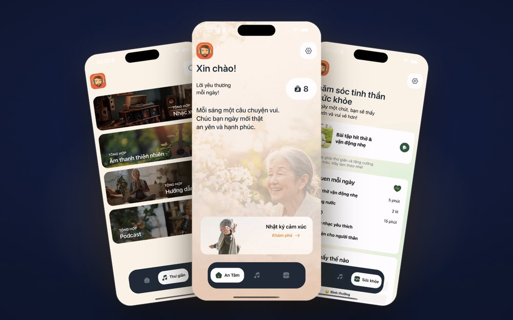
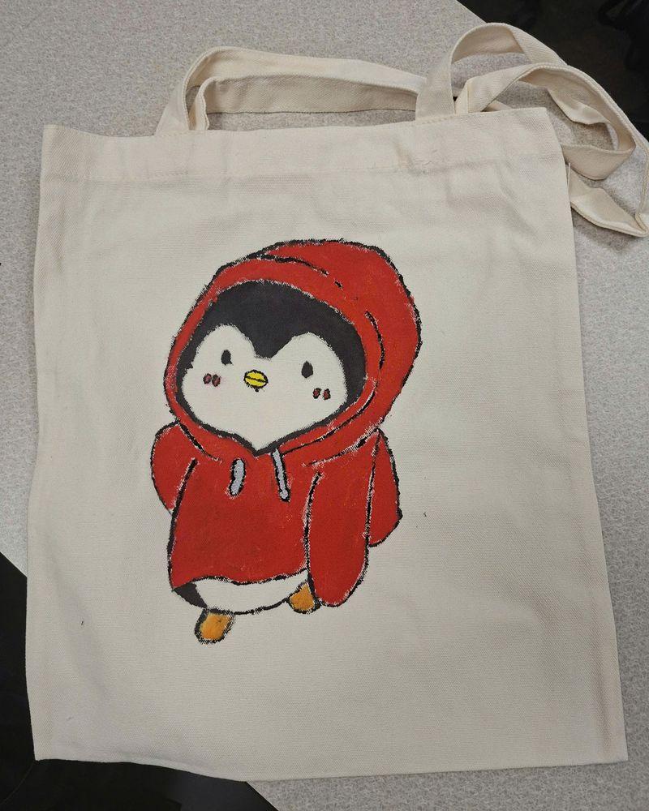
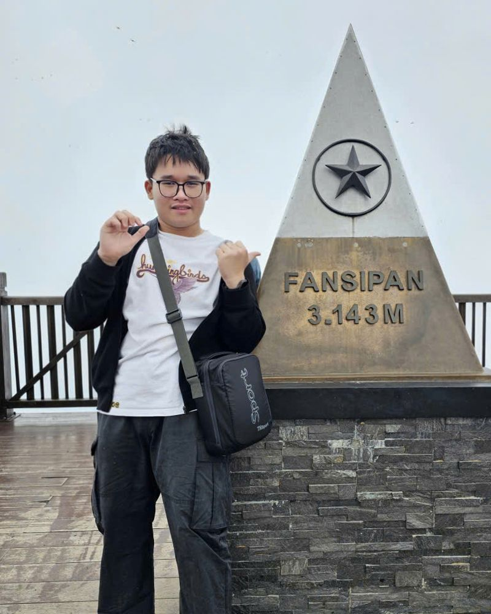
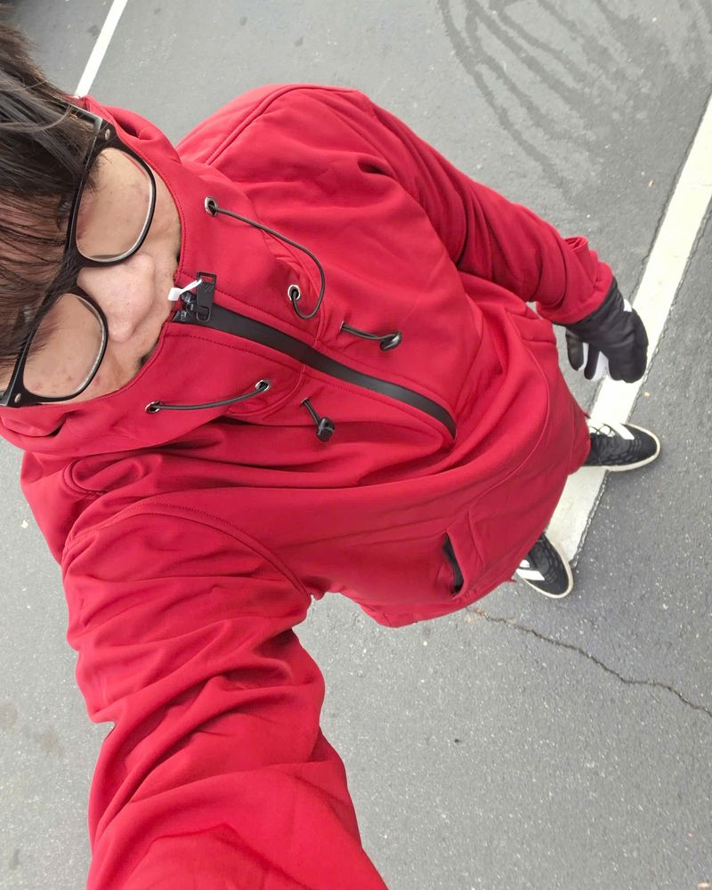
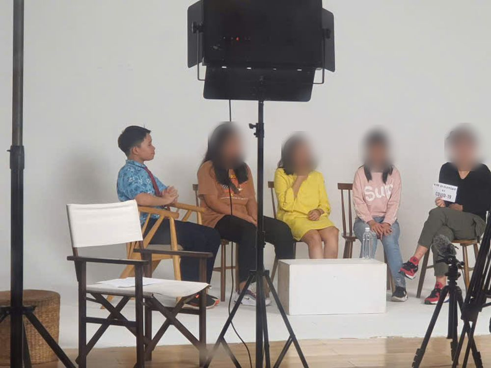
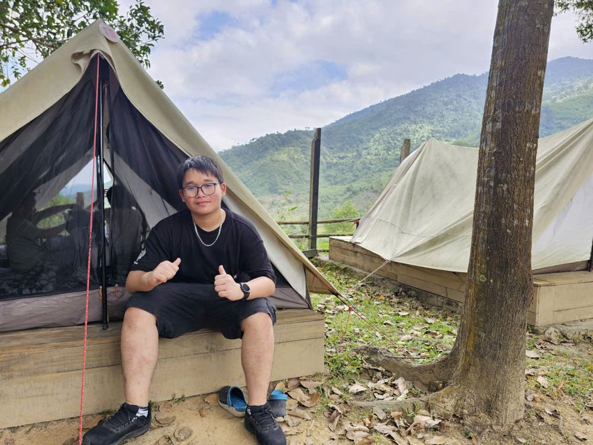
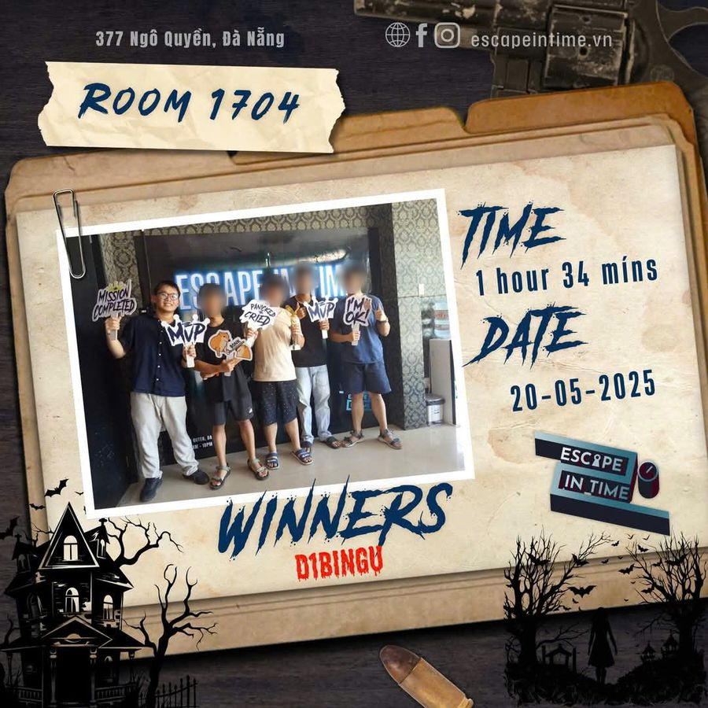

Golden Peace
A calm, easy-to-read wellness app for older adults in Vietnam. I founded the team and ran research with 120+ older adults and care staff.
I build apps for the people around me, from older adults in Vietnam to people living with Alzheimer’s.
I grew up in Đà Nẵng, Vietnam, and I study computer science at the University of Georgia. I build apps that make everyday care a little easier, from helping older adults keep healthy routines to giving people a place to revisit memories of those they love.

Tools I use: Python, C++, TypeScript, React Native, Expo, Flutter, Supabase, Firebase, MySQL, Figma, YOLOv5.
Two apps, both shaped by listening to the people who use them.

A calm, easy-to-read wellness app for older adults in Vietnam. I founded the team and ran research with 120+ older adults and care staff.

A diary app for people living with Alzheimer’s: letters with a photo and a song attached.
Where I grew up, in a home shared by three generations. Photo by me.
What I do when I’m not studying. Mini me demonstrates.
Chess (I was club president), Rubik’s cubes, logic puzzles and escape rooms. Which explains the keys hidden on this site.
My favourite sport. That’s me mid-swing in the photos further down.
Shooting hoops.
I build apps on my own time, not just for class.
Chess workshops, The Talkie English Camp, and helping people learn in general.
English, Western music, and following American sports.
Time in the water.
Every Đà Nẵng photo on this site is one I took.
Drag the photos around. Something might be hiding underneath.









Drag to rearrange. Double-click a photo to send it back.
Want to build something together?